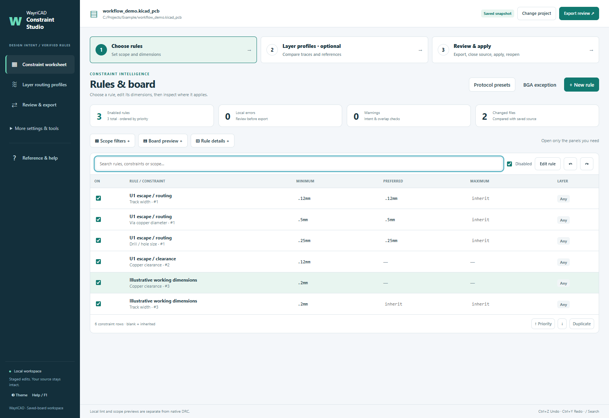

Visual rule scope, protocol presets and staged project review.

Use the sidebar for clearance matrices, netclass dimensions, reusable sets and reviewed export. Engineering tools retains all original specialist editors on the same staged workspace. Help/F1 opens the searchable reference inside the application.
Choose what to show
The rule table starts at full width. Scope filters, Board preview and Rule details open from their buttons above the table. An active scope filter stays visible as a Clear filter button. Select a rule and click Edit rule, or edit its dimensions in place. Rule details shows an illustrative dimension diagram; expand Condition expression or Advanced: compare objects & priority when needed. The larger board preview supports zoom, pan and item inspection.
The workflow cards lead to rules, optional layer profiles, and review/apply. More settings & tools contains matrices, netclasses, sets and specialist editors. In layer profiles, expand Compare layer geometry or Saved profiles & diagnostics as needed. Diagnostics warnings remain visible while that panel is closed.
Layer routing profiles
Save and reload the board. Save PCB and Board Setup in KiCad. A clean Studio workspace reloads the saved board when its window regains focus; use Reload saved board if the preview still shows older copper or nets. Export or undo staged edits before reloading.
Choose nets and layers. Create one tab per protocol instance. Select exact saved-board nets or an existing netclass. Differential pairs require KiCad-recognized names such as CAN_P/CAN_N. For each signal layer choose its reference plane, track width and pair gap.
Compare geometry. The side-by-side layer cards show stackup context and parallel traces on one scale. They are geometry illustrations, not impedance predictions. Check that pair gap does not conflict with a larger clearance rule, and obtain verified dimensions for complex stackups.
Review vias. Choose a via type, copper diameter and drill; microvias, blind vias and buried vias also need a layer span. Studio checks the saved board's floors and stages scoped DRC limits. KiCad does not automatically choose the via type from this profile, so select it in the router.
Apply and route. Stage and export the review, then click Open Apply Review on the review page. Close every KiCad editor for the source project before confirming the helper's write; it checks file fingerprints and makes backups. Reopen KiCad to use the persistent profile. Choose netclass/rule-driven sizing with Auto track width off. Finish a route at a transition via and start a new route on the destination layer to use its saved width or pair gap. KiCad 10 keeps one width in an active route; existing copper is not resized.
Review actual plane continuity, return paths, via impedance and fabricator limits before production. Native DRC is the authority for the saved board.
Workflow
Save the PCB and Board Setup, then open Constraint Studio.
Use the constraint worksheet and scope tree. Edit min/preferred/max in place. Green means condition match, amber unknown, gray no match. Click an item for details; wheel to zoom and drag to pan.
Use Protocol presets to detect nets, review assignments and geometry, preview rules and stage them in Studio.
Edit rules, matrices, netclasses or board settings; inspect local lint and the file diff in Review & export.
Export a separate review copy, run native DRC, then close source editors before using its Apply Review helper.
If the embedded visual page reports a startup error, the complete native worksheet opens immediately and the status bar shows the error. Use the installed KiCad-compatible runtime for WebView2.
Scope feedback is not native effective-rule resolution. The map simplifies pad geometry and curves. Local lint does not replace native DRC. Protocol dimensions are illustrative and require stackup, device and fabricator review.
If the visual page stops responding, use Open native worksheet · recover workspace above it. This wx button retains the same staged workspace. Missing engine replies time out after 15 seconds without replaying edits; review the native state before retrying. Repeated focus events share one refresh, and a failed initial snapshot keeps startup recovery available.
Native report loading prepares evidence in the background, uses 200 records per page and debounces searches; the full JSON remains available. Apply Review runs its original verified transaction in one background worker. It rejects duplicate applies and waits for completion before the window closes, preserving confirmations, hashes, backups and rollback.
Read dimensions and recover stale work
Track width, pair gap, clearance, via diameter and drill are millimetres; target impedance is ohms and profile tolerance is percent geometry. Check the actual saved stackup and KiCad's effective rules; the side-by-side diagrams do not calculate a qualified impedance.
Layout preview is old: save in KiCad, then Reload saved board in a clean workspace. Export or undo staged work before reloading.
Rule shows no matches: check layer and exact net spelling. Unknown condition evaluation must not be read as a pass.
Width does not change mid-route: end at the transition via and start the next segment on its destination layer; KiCad 10 retains one width during an active route.
Apply Review rejected: close all editors for that project and check changed file fingerprints; build a fresh review after external changes.
Embedded page fails: use Open native worksheet · recover workspace; it retains the staged workspace without replaying uncertain edits.